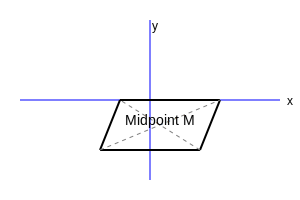
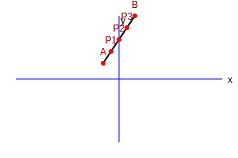

1. Find the coordinates of the point which divides the join of (-1, 7) and (4, -3) in the
ratio 2 : 3.

Let \(P(x, y)\) divide AB in 2:3. \(A(-1, 7)\), \(B(4, -3)\).
Coordinates \(x = \frac{m_1x_2 + m_2x_1}{m_1 + m_2} = \frac{2(4) + 3(-1)}{2 + 3}\)
\(x = \frac{8 - 3}{5} = \frac{5}{5} = 1\)
\(y = \frac{m_1y_2 + m_2y_1}{m_1 + m_2} = \frac{2(-3) + 3(7)}{2 + 3}\)
\(y = \frac{-6 + 21}{5} = \frac{15}{5} = 3\)
Point P is (1, 3).
2. Find the coordinates of the points of trisection of the line segment joining (4, -1)
and (-2, -3).

Let A(4, -1) and B(-2, -3). Points P, Q trisect AB.
P divides AB in 1:2.
\(x_P = \frac{1(-2) + 2(4)}{3} = \frac{-2 + 8}{3} = 2\)
\(y_P = \frac{1(-3) + 2(-1)}{3} = \frac{-3 - 2}{3} = -\frac{5}{3}\)
Q divides AB in 2:1.
\(x_Q = \frac{2(-2) + 1(4)}{3} = \frac{-4 + 4}{3} = 0\)
\(y_Q = \frac{2(-3) + 1(-1)}{3} = \frac{-6 - 1}{3} = -\frac{7}{3}\)
P(2, -5/3), Q(0, -7/3).
3. To conduct Sports Day activities, in your rectangular shaped school ground ABCD, lines
have been drawn with chalk powder at a distance of 1m each. 100 flower pots have been placed at a distance
of 1m from each other along AD, as shown in Fig. 7.12. Niharika runs 1/4th the distance AD on the 2nd line
and posts a green flag. Preet runs 1/5th the distance AD on the eighth line and posts a red flag. What is
the distance between both the flags? If Rashmi has to post a blue flag exactly halfway between the line
segment joining the two flags, where should she post her flag?

Given: AD = 100m.
Niharika's Green Flag (G): On 2nd line, \(x_1 = 2\). Distance = \(\frac{1}{4}
\times 100 = 25\)m. So, \(y_1 = 25\). G(2, 25).
Preet's Red Flag (R): On 8th line, \(x_2 = 8\). Distance = \(\frac{1}{5}
\times 100 = 20\)m. So, \(y_2 = 20\). R(8, 20).
Distance between flags (GR):
\(GR = \sqrt{(8-2)^2 + (20-25)^2} = \sqrt{6^2 + (-5)^2} = \sqrt{36 + 25} = \sqrt{61}\)m.
Rashmi's Blue Flag (B) is halfway:
\(x = \frac{2+8}{2} = 5\). \(y = \frac{25+20}{2} = 22.5\).
Distance is \(\sqrt{61}\)m. Blue flag at 5th line, 22.5m distance.
4. Determine the ratio in which the line segment joining the points (-3, 10) and (6, -8)
is divided by (-1, 6).

Let ratio be \(k:1\). P(-1, 6).
\(x = \frac{k(6) + 1(-3)}{k + 1} = -1 \Rightarrow 6k - 3 = -k - 1\)
\(7k = 2 \Rightarrow k = \frac{2}{7}\)
Verify with y: \(\frac{2/7(-8) + 10}{2/7 + 1} = \frac{-16/7 + 70/7}{9/7} = \frac{54}{9} = 6\)
(True).
Ratio is 2:7.
5. Find the ratio in which the line segment joining A(1, -5) and B(-4, 5) is divided by
the x-axis. Also find the coordinates of the point of division.

Let ratio be \(k:1\). Point on x-axis: \(P(x, 0)\).
\(y = \frac{k(5) + 1(-5)}{k + 1} = 0 \Rightarrow 5k - 5 = 0 \Rightarrow k = 1\).
Ratio is 1:1.
\(x = \frac{1(-4) + 1(1)}{2} = -\frac{3}{2}\).
Ratio 1:1. Point (-3/2, 0).
6. If (1, 2), (4, y), (x, 6) and (3, 5) are the vertices of a parallelogram taken in
order, find x and y.

Diagonals bisect each other. Midpoint AC = Midpoint BD.
\(\left(\frac{1+x}{2}, \frac{2+6}{2}\right) = \left(\frac{4+3}{2}, \frac{y+5}{2}\right)\)
\(\frac{1+x}{2} = \frac{7}{2} \Rightarrow 1 + x = 7 \Rightarrow x = 6\).
\(\frac{8}{2} = \frac{y+5}{2} \Rightarrow 8 = y + 5 \Rightarrow y = 3\).
x = 6, y = 3.
7. Find the coordinates of a point A, where AB is the diameter of a circle whose centre is
(2, -3) and B is (1, 4).

Let \(A(x, y)\). Centre \(C(2, -3)\) is midpoint of AB.
\(\frac{x+1}{2} = 2 \Rightarrow x + 1 = 4 \Rightarrow x = 3\).
\(\frac{y+4}{2} = -3 \Rightarrow y + 4 = -6 \Rightarrow y = -10\).
A is (3, -10).
8. If A and B are (-2, -2) and (2, -4), respectively, find the coordinates of P such that
AP = 3/7 AB and P lies on the line segment AB.

\(AP = \frac{3}{7}AB \Rightarrow AP:PB = 3:4\).
\(x = \frac{3(2) + 4(-2)}{7} = \frac{6-8}{7} = -\frac{2}{7}\).
\(y = \frac{3(-4) + 4(-2)}{7} = \frac{-12-8}{7} = -\frac{20}{7}\).
P(-2/7, -20/7).
9. Find the coordinates of the points which divide the line segment joining A(-2, 2) and
B(2, 8) into four equal parts.

Midpoint Q of AB = \((0, 5)\).
Midpoint P of AQ = \((-1, 3.5)\) or \((-1, \frac{7}{2})\).
Midpoint R of QB = \((1, 6.5)\) or \((1, \frac{13}{2})\).
The points are (-1, 7/2), (0, 5), (1, 13/2).
10. Find the area of a rhombus if its vertices are (3, 0), (4, 5), (-1, 4) and (-2, -1)
taken in order. [Hint : Area of a rhombus = 1/2 (product of its diagonals)]

\(AC = \sqrt{(-1-3)^2 + (4-0)^2} = \sqrt{16+16} = \sqrt{32} = 4\sqrt{2}\).
\(BD = \sqrt{(-2-4)^2 + (-1-5)^2} = \sqrt{36+36} = \sqrt{72} = 6\sqrt{2}\).
Area = \(\frac{1}{2} \times 4\sqrt{2} \times 6\sqrt{2} = \frac{1}{2} \times 24 \times 2 =
24\).
Area = 24 square units.